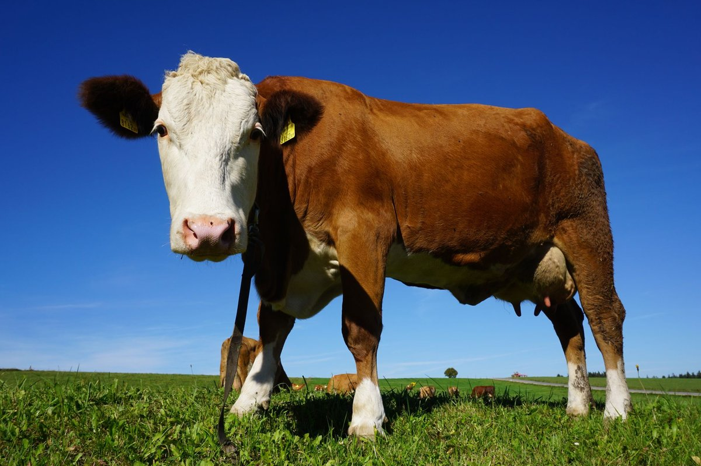

Not All Trans Fats Are Bad, Major Review Finds: Daily Energy

Key takeaways
- A few years ago, I stood in the dairy aisle at Trader Joe's squinting at labels like they were written in ancient Greek.
- When Not All Trans Fats Are Bad, Major Review Finds popped up across research journals, it completely shattered my rigid, anxiety-ridden di
- Track what feels sustainable and adjust gradually.
A few years ago, I stood in the dairy aisle at Trader Joe's squinting at labels like they were written in ancient Greek. When Not All Trans Fats Are Bad, Major Review Finds popped up across research journals, it completely shattered my rigid, anxiety-ridden dietary rules.
For over a decade, I treated every single gram of dietary fat like an enemy agent. I skipped butter, ate dry toast, and wound up exhausted by 2 p.m. every single day.
It turns out our bodies actually thrive when we distinguish between industrial junk and nature-made compounds. You can read my related healthy tip on navigating grocery aisles without losing your mind.
The headline truth is simple: Not All Trans Fats Are Bad, Major Review Finds, especially when looking at pasture-raised dairy and grass-fed meats. These natural fats contain CLA, which clinical reviews link to healthier lipid profiles and sustained cellular fuel.
When I started adding a small pat of real, golden grass-fed butter to my morning eggs, my brain fog cleared. Check out another practical guide to see how real fats balance morning hormones.
Artificial industrial trans fats—the stuff created in high-heat factories to extend shelf life—spark systemic inflammation. But natural trans fats from pastured animals digest completely differently in our metabolic pathways.
If you have struggled with chronic afternoon energy slumps, cutting out wholesome whole foods might be the culprit. Take a look at this similar wellness insight on recovering from diet burnout.
Pro-Tip: When shopping at your local supermarket, look for pasture-raised whole milk kefir or Kerrygold-style butter. You only need a tablespoon or two to reap the benefits of natural CLA.
Building real vitality is never about militant restriction or eating chalky dietary bars. It is about feeding your mitochondria with clean, nutrient-dense building blocks that sustain you all day.
Try making tiny swaps rather than overhauling your entire kitchen overnight. You can stay consistent with this by tracking how energized you feel rather than counting every microscopic fat gram.
The 2-Minute Win
Swap out processed vegetable-oil spreads today for one teaspoon of genuine grass-fed ghee or butter melted over roasted veggies. Notice how your afternoon sugar cravings soften within hours.
Ditching the outdated fear of real food changed my relationship with eating forever. When we follow genuine human physiology instead of 90s dietary dogmas, feeling good becomes remarkably simple.
Take your time rebuilding trust with real food. Feel free to explore more health guides to keep upgrading your daily routine.
Educational only — not medical advice.
Recommended Reading
- Is Your Toddler Eating Ultra-Processed Foods? The Shocking Truth About Toddler Meals
- Busy Pro's Guide to Quick, Healthy Eating
- Millions Take Calcium And Vitamin D For Bone Health. A Major Review Finds Little Benefit
More in health
 health
healthVitamin C Linked To Fewer Deaths In Blood Disorder Trial: Key Steps
Vitamin C linked to fewer deaths in blood disorder trial findings offer hope. Discover realistic, science-backed nutriti
Read article → health
healthCreatine May Help Build Muscle Even Without Exercise, Researchers Find
Creatine May Help Build Muscle Even Without Exercise, Researchers Find according to new data. Discover how this suppleme
Read article →Related posts
healthVitamin C Linked To Fewer Deaths In Blood Disorder Trial: Key Steps
Vitamin C linked to fewer deaths in blood disorder trial findings offer hope. Discover realistic, science-backed nutriti
Read article →healthCreatine May Help Build Muscle Even Without Exercise, Researchers Find
Creatine May Help Build Muscle Even Without Exercise, Researchers Find according to new data. Discover how this suppleme
Read article → health
healthScientists Discover Strange Link Between Low Vitamin D And Pain
Scientists discover strange link between low vitamin D and pain. Learn how fixing my levels ended years of mystery aches
Read article →